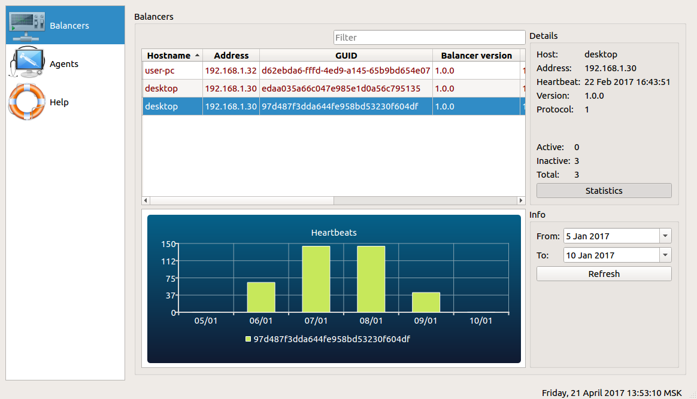

Console - it's a software which shows you statistics about agents and balancers.
"Balancers" page shows you list of all balancers registered in the database.
If you want to see statistics of the balancer do the following:
- Select balancer in the table1
- Press "Statistics" button2
- Choose dates "From" and "To"3
- Press "Refresh" button4
Each balancer sends one heartbeat per 10 minutes or 144 per a day.
So if the graph value is less than 140 - balancer didn't work some time
You can sort and filter balancers table.
Click on the column header to change sorting mode (ASC, DESC) for the table by this column
Type some text in the filter't text field and table will filtered by active column

If you need to print or to save in PDF the last balancer statistics, double click on the balancer row
and press "Reports" button in the dialog, then you can select report you want.
"Last activity" - balancer activity last day report
"Daily activity" - balancer activity report for the selected day
Console - it's a software which shows you statistics about agents and balancers.
"Agents" page shows you list of all agents registered in the database.
If you want to see statistics of the agent do the following:
- Select agent in the table1
- Press "Statistics" button2
- Choose date3
- Press "Refresh" button4
- Choose statistics type that you want to see (CPU is the default)5
You can sort and filter agents table.
Click on the column header to change sorting mode (ASC, DESC) for the table by this column
Type some text in the filter't text field and table will filtered by active column
Also you can logically group the agents.
Just create any "Departments", and move the agent there
If you need to print or to save in PDF the last or daily agent statistics, double click on the agent row
and press "Reports" button in the dialog, then you can select report you want.
"Last activity" - agent activity last day report
"Daily activity" - agent activity report for the selected day